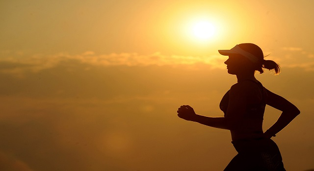

SAÚDE E BEM-ESTAR

ASSUNTO
Saúde e bem estar, segundo o (OMS) Organização mundial da saúde, são dois conceitos que merecem atenção.
Eles estão relacionados entre algum outros aspectos, com ausência de doenças e com a satisfação de vida.
CONCEITO
A saúde é definida como um estado completo de bem-estar, seja elas social,
mental e físico e não somente ausência de enfermidades e de afecções. Já o bem-estar é a medida que um individuo é capaz por um lado de realizar aspirações e satisfazer necessidade.
COISAS QUE PODEM PREJUDICAR SUA SAÚDE E BEM-ESTAR:
Alimentação desbalanceada;
Açúcar em excesso;
Quantidade exagerada de comida;
Comer antes de dormir;
Beber pouca água;
COMO PROMOVER A SÁUDE E BEM ESTA:
praticar atividade física regularmente, controlar o peso, visitar o médico periodicamente, diminuir o estresse, manter bons hábitos sociais e familiares,
incluindo hobbys e atividades de lazer, assim como evitar o tabagismo e moderar o consumo de bebidas alcoólicas são fundamentais para promover a saúde e o bem-estar.